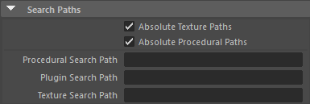

搜索路径
 请参见《Arnold 用户手册》中的渲染设置
请参见《Arnold 用户手册》中的渲染设置

这些设置指定 MtoA 用来查找插件、程序、着色器和纹理的搜索路径。
可以使用冒号 (:) 作为分隔符（适用于 Windows、Linux 和 OSX）。例如：
texture_searchpath "C:/tmp;
[MY_TEXTURE_PATH2]:C:/ Users/Documents/ maya/projects/Support/sourceimages:
[MY_TEXTURE_ PATH1]"
texture_searchpath "[MY_TEXTURE_PATH1]:
[MY_ TEXTURE_PATH2];C:/Users/ Documents/maya/projects/Support/sourceimages: C/:tmp"
绝对纹理路径(Absolute Texture Paths)
要导出相对路径，请清除此复选框，然后将绝对路径的第一部分填入“纹理搜索路径”(Texture Search Path)中。
例如，如果绝对纹理路径如下：
C:\\Users\\Documents\\ProjectDoom\\textures\\Texture.jpg 那么，如果将 C:\Users\Documents\ProjectDoom 填入“纹理搜索路径”(Texture Search Path)中，并清除“绝对纹理路径”(Absolute Texture Paths)，则将导出以下相对路径：
textures\\Texture.jpg 如果使用文件浏览器选择纹理，则启用和禁用绝对纹理路径的情况下都没有问题。但是，如果手动编辑文本字段，将会失败，除非将图像放置在 sourceimages 文件夹中（这是预期的行为）。
绝对程序路径(Absolute Procedural Paths)
要导出加载 ass 文件的程序的相对路径，请清除此复选框，然后将绝对路径的第一部分填入“程序搜索路径”(Procedural Search Path)中。
例如，如果绝对路径如下：
C:\\Users\\Documents\\ProjectDoom\\ass\\prop.ass 那么，如果将 C:\Users\Documents\ProjectDoom 填入“程序搜索路径”(Procedural Search Path)中，并清除“绝对程序路径”(Absolute Procedural Paths)，则将导出以下相对路径：
ass\\prop.ass 程序搜索路径(Procedural Search Path)
定义一个位置，用于搜索加载 ass 文件（obj 或 ply 文件）的程序节点。
可以更改主项目外部程序的路径名。MtoA 将同时在替代对象的文件路径以及“程序搜索路径”(Procedural Search Path)设置的路径中搜索 ass 文件。例如，如果 ass 文件保存在 C:/temp/ass 下的一个文件夹中，则 MtoA 还会在子文件夹中搜索该 ass 文件。
插件搜索路径(Plugin Search Path)
定义一个位置，用于搜索着色器之类的插件、创建新节点类型的程序插件以及体积插件。
例如，如果从其他插件加载 ass 文件，则可能需要设置 plugin_searchpath 以加载特定于插件的着色器。
纹理搜索路径(Texture Search Path)
定义要搜索纹理的位置。